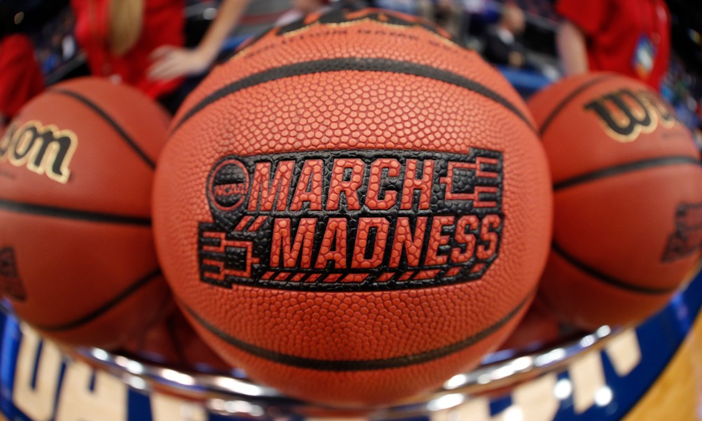

Company History and Story
The first NCAA Division I men’s basketball tournament was in 1939 and in 1939, the Oregon Ducks went 29-5 on the season and beat Ohio State 46-33 to win the
national title in the first NCAA tournament. The 1939 tournament featured just eight teams. In 1951, the field doubled to 16, and kept expanding over the next
few decades until 1985, when the modern format of a 64-team tournament began. In 2001, after the Mountain West Conference joined Division I and received an
automatic bid, pushing the total teams to 65, a single game was added prior to the first round. In 2011, three more teams were added, and with them, three
more games to round out the First Four.
Management Team
Gonzaga Bulldogs:The best team in college basketball this season -- and in many seasons.
Baylor Bears: A team that's almost completely fallen back into its groove of dominance.
Michigan Wolverines: A skillfully coached team that was faded hard by many and predicted to fall prior to the Elite Eight
but has nonetheless averaged 81.3 points without its best player (Isaiah Livers) and separated from all of its opponents
by the 10-minute mark of the second half.
USC Trojans: An overlooked team finally getting its respect. USC has won its three games by 64 points, which is the second-largest
aggregate margin of victory by any seed No. 6 or worse in history. Listen, my bracket is sort of a shambles.
Houston Cougars: The No. 3-ranked team at KenPom get a little bit lucky but also exert its will on teams.
UCLA Bruins: A revival of a blue blood. UCLA's 88-78 win over Alabama Sunday night at Hinkle was a game I'd rank in the top three of
the tournament.
Arkansas Razorbacks: The team that's had the shakiest way to get to this point. The Razorbacks beat TTU and Oral Roberts by two points
apiece and would no longer be in the field had Max Abmas' 3-point attempt been two inches to the right. But it wasn't, and Arkansas is
still dancing.
Oregon State Beavers: One of the most unlikely regional-final runs from a power-conference team in history.
